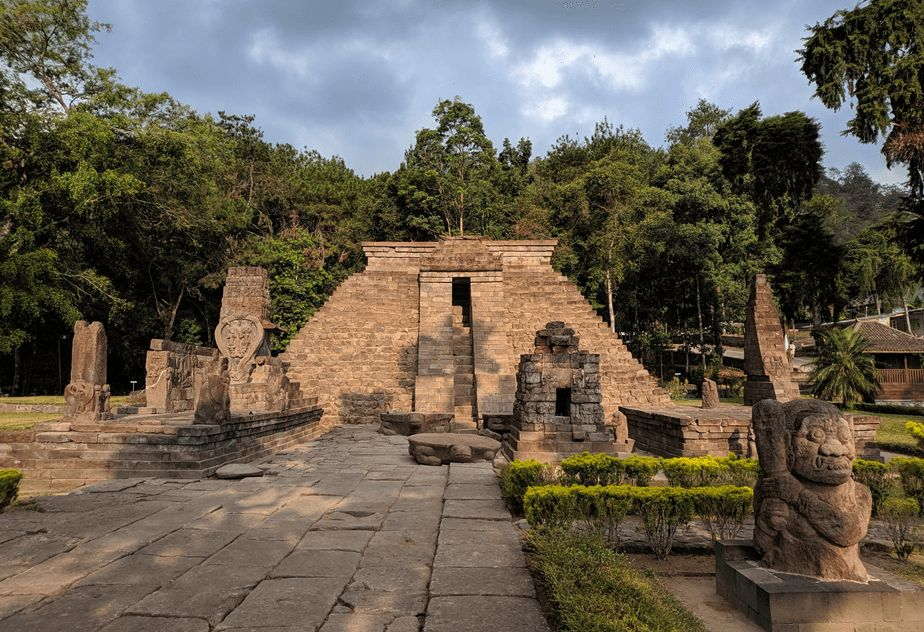
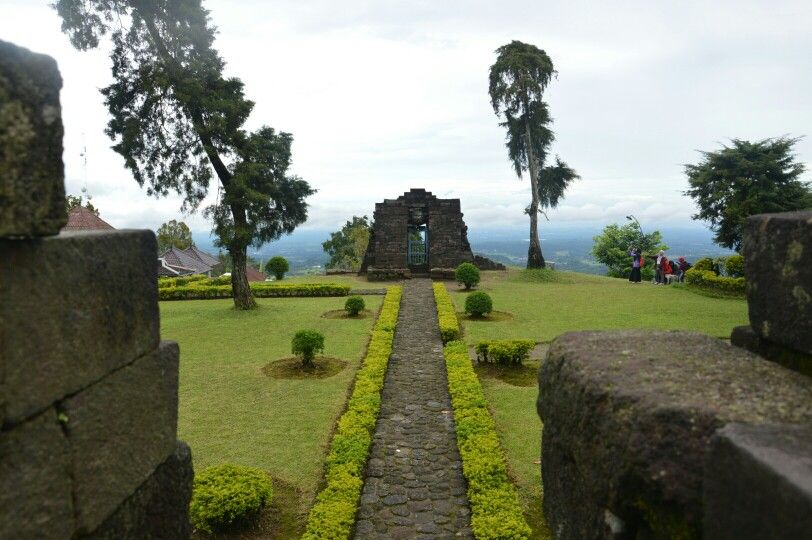

1. Arsitektur yang Tidak Biasa
Candi Sukuh terletak di Karanganyar, Jawa Tengah, tepat di lereng Gunung Lawu. Bangunan cagar budaya Hindu ini sangat unik dan berbeda dari candi-candi Jawa Tengah pada umumnya (seperti Prambanan). Bentuk bangunan utamanya berupa **trapesium bersusun atau punden berundak**, yang sekilas justru sangat mirip dengan bentuk piramida suku Maya di Meksiko, Amerika Tengah.

2. Relief Kehidupan dan Kebebasan Jiwa
Didirikan pada abad ke-15 menjelang runtuhnya Kerajaan Majapahit, Candi Sukuh memiliki banyak relief dan arca yang menceritakan tentang pembebasan jiwa dari kutukan atau hal-hal duniawi (*ruwatan*). Pahatan pada reliefnya dibuat dengan gaya sederhana yang mirip dengan bentuk wayang kulit. Letaknya yang berada di ketinggian juga memberikan suasana tenang dan sakral, yang memang ditujukan untuk tempat pemujaan spiritual pada masanya.
Pentingnya Pelestarian
Candi Sukuh merupakan salah satu peninggalan sejarah paling langka di Indonesia yang menunjukkan adanya dinamika transisi budaya arsitektur di akhir era kerajaan Hindu-Buddha. Menjaga kelestarian strukturnya membantu kita memahami kekayaan evolusi seni rupa Nusantara.